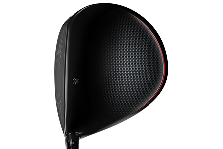

ZX5 DRIVER
Gain total confidence with the all-new Srixon ZX5 Driver. Featuring Srixon’s new Rebound Frame Technology, the ZX5 Driver focuses your energy into the golf ball for incredible speed and distance. The new ZX5 Driver from Srixon is ideal for straight drives that launch high and carry far.
TECHNOLOGY

Rebound Frame
By focusing more energy into the golf ball, Rebound Frame's unique structure increases ball speed and distance on every shot, especially center-face impacts.
Carbon Crown
A 15% larger carbon crown repositions mass low, pushing MOI up and increasing forgiveness.

Adjustability
A weight port allow you to adjust swing weight based on shaft choice and feel preference. An adjustable hosel also provides variation in loft, life, and face angle.
Tour Shaping
Flatter, shallower, and straighter, this new head shape inspires confidence for highly skilled players.
ZX5 Driver Specs
SRIXON Irons Z-Forged Steel 5/PW PRICE
899,99 € / 989,99 CHF / 8 399 SEK / 999 £
SRIXON Irons Z-Forged Steel - Single Iron PRICE
149,99 € / 164,99 CHF / 1 399 SEK / 166,5 £